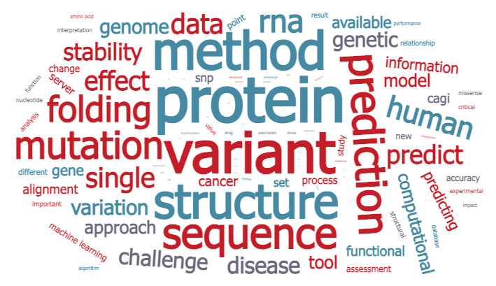

|
Biomolecules Folding and Disease |
|
|
|

email: emidio.capriotti@unibo.it |
 |
Since October 2019, I am Associate Professer of the
Department of Pharmacy and Biotechnology (FaBiT),
University of Bologna, Italy. In November 2024, I was also appointed as Joint Faculty in the Computational
Genomics Platform at the IRCCS University Hospital of Bologna, where I contribute to translating computational
methods into genomics applications for rare diseases.
My academic career spans several institutions. From July 2015 to September 2016, I served as Junior Group Leader
at the Institute of Mathematical Modeling of Biological Systems,
University of Düsseldorf, Germany. From 2012 to 2015, I was
Assistant Professor in the Department of Pathology
at the University of Alabama at Birmingham (UAB), USA. Prior to that, I was
a Marie Curie International Outgoing Fellow in the
Bioengineering Department at Stanford University.
My postdoctoral training
includes two years in the Biocomputing Group at the University of Bologna and three years in the Structural Bioinformatics
Unit at the CIPF in Valencia, Spain.
I hold a PhD in Physical Sciences from the University of Bologna. My scientific background is in Structural Bioinformatics,
and over the last decade my research has focused on understanding the functional
impact of Single Nucleotide Variants (SNVs) that cause single amino acid changes. I have developed machine learning
methods to predict the effect of point mutations on protein stability, including tools for estimating the free energy
change associated with nsSNVs. More recently, my research has expanded to investigate the relationship between SNVs and
the onset of human disease. By integrating information from protein sequences, evolutionary profiles, and functional
annotations, I have developed several widely used web server tools for predicting disease-related protein mutations.
The main goal of my research is to unravel the complex relationship between genomic variation and disease by leveraging
large-scale data from high-throughput technologies. I am particularly interested in designing disease-specific algorithms and
computational tools that advance personal genomics and precision medicine. For further details on my scientific activity
and publications, please refer to my full CV.